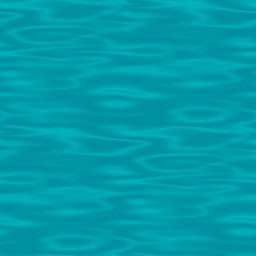

One of the more interesting effects seen in old demos is the Tunnel. It shows a tunnel moving and rotating seemingly in 3D. This tutorial will explain how to make one.
Here is an example of a tunnel effect:
It works as follows:
First, you need a texture, which is displayed in the sides of the tunnel.
The animation of the tunnel isn't calculated on the fly. All of the necessary values are precalculated and stored in one of two tables — the Distance table, and the Angle table.
The Distance table contains, for every pixel in the canvas, the inverse of the distance to the center of the screen that pixel has. As a result, pixels near the center of the canvas have a very high value, and thus appear to be very far away, while pixels at the edges of the canvas have lower values, appearing to be much closer as a result.
The Angle table contains the angle of every pixel relative to the center of the canvas.
Once everything is precalculated, the animation loop begins. Every frame, it goes through every pixel (x, y), then uses the angle and distance tables to ask which texel of the texture it should draw. To give the appearance of movement, the values of the angle and distance tables are shifted: Shifting the angle table makes the tunnel rotate, while shifting the distance table makes you move forwards or backwards.
The texture has a finite size, while the distance can go up to infinity, and the values of the angles are periodic. When a value outside the texture is asked for, modulo divide it through the size of texture. This way, we get a texture that repeats itself over and over again (but much smaller as it gets closer to the center.) You'll see this much better in the code.
This code creates a tunnel where you fly forwards while the tunnel rotates, and the center of the tunnel is always in the center of the screen. The code is written so that no matter what size texture we use, the effect runs at the exact same speed, and the texture will always attempt to fill up the canvas.
We start by defining a few variables and creating the canvas:
The texture is an ImageData object containing information for the texture of the tunnel. Bigger textures lead to better effects. Personally, I recommend using an image that's at least 256x256, because it will be as big as the screen, and strange things can happen if it's smaller than that.
The distance table contains the precalculated distance of every pixel, while the angle table contains the precalculated angle. These have to be at least as big as the screen, but if you want to do things like moving the center of the tunnel, you'll have to make them bigger.
The buffer is another ImageData object. This allows us to draw the entire image at once, instead of drawing pixels individually.
const texWidth = 256;
const texHeight = 256;
var canvas = document.createElement("canvas");
canvas.width = 640;
canvas.height = 480;
var ctx = canvas.getContext("2d");
var texture = new ImageData(texWidth, texHeight);
var distanceTable = new Array(canvas.height);
var angleTable = new Array(canvas.height);
var buffer = new ImageData(canvas.width, canvas.height);Next, we generate a simple XOR texture. Loading an image is also an option, but I'll cover that later.
//Generate the texture
for (let y = 0; y < texture.height; y++) {
for (let x = 0; x < texture.width; x++) {
let id = (y * w + x) * 4
let c = x ^ y;
texture.data[id] = c;
texture.data[id + 1] = c;
texture.data[id + 2] = c;
texture.data[id + 3] = 255;
}
}Next, we generate the buffers. The distance buffer uses the formula of the inverse distance from the center of the screen, multiplied by the height of the texture so that no matter what size the texture is, it's always as big. It's also modulo divided by the texture's height so that the same texture is repeated the entire time over the whole distance.
For the angle buffer, the angle of the current pixel (the angle it has to the pixel in the center of the screen) is calculated using Math.atan2(). This function returns the angle of a given point in radians, using the arc tangent of a given y-value divided by a given x-value. It's also divided by π, so the texture will wrap around the tunnel exactly once.
The ratio variable is the ratio between the width and height the texture will have on screen, or how long the texture stretches into the distance.
//Generate the non-linear transformation tables
for (let y = 0; y < canvas.height; y++) {
distanceTable[y] = new Int8Array(canvas.width);
angleTable[y] = new Uint8Array(canvas.width);
let yy = y - canvas.height / 2;
for (let x = 0; x < canvas.width; x++) {
let xx = x - canvas.width / 2;
let ratio = 32.0;
let distance = Math.floor(ratio * texture.height / Math.sqrt((xx * xx) + (yy * yy))) % texture.height;
let angle = Math.floor(0.5 * texture.width * Math.atan2(yy, xx)) / Math.PI;
distanceTable[y][x] = distance;
angleTable[y][x] = angle;
}
}Next, the animation loop begins.
The animation variable is set to the time passed to the function via requestAnimationFrame(), and will be used to shift the tables for moving and rotating.
Then for every pixel (x, y), the correct texel is gotten from the texture by using the tables, and shifted with the animation value. The modulo division through the width and height of the texture ensure that we won't be asking for a pixel outside the texture. The individual values are converted to integers using Math.floor(), since decimals interact strangely with arrays and modulo division. The movement variables (shiftX and shiftY) are multiplied with the texture width and height to make the effect independent of the texture's size.
The animation of the distance and angle is also multiplied with a constant value (1.0 and 0.25, respectively). By changing these values you can independently change the speed of the tunnel's movement and rotation.
The individual pixels are then added to the buffer ImageData, and when that is finished, it is drawn to the canvas, and the entire process repeats on the next frame.
function draw(time) {
let animation = time / 1000.0;
//Use animation value to calculate shift values
let shiftX = Math.floor(texWidth * 1.0 * animation);
let shiftY = Math.floor(texHeight * 0.25 * animation);
for (let y = 0; y < canvas.height; y++) {
for (let x = 0; x < canvas.width; x++) {
let id = (y * canvas.width + x) * 4;
//Get the texel from the texture by using the tables, shifted with the animation variable
let d = Math.floor(distanceTable[y][x] + shiftX) % texWidth;
let a = Math.floor(angleTable[y][x] + shiftY) % texHeight;
let tex = (a * texture.width + d) * 4; //Get texel from texture
buffer.data[id] = texture.data[tex];
buffer.data[id+1] = texture.data[tex+1];
buffer.data[id+2] = texture.data[tex+2];
buffer.data[id+3] = texture.data[tex+3];
}
}
//Render the ImageData on the canvas
ctx.putImageData(buffer, 0, 0);
window.requestAnimationFrame(draw)
}
//Add the canvas to the document and begin the animation
document.body.appendChild(canvas);
window.requestAnimationFrame(draw);This code will produce a tunnel effect that resembles the demo above.
In addition to procedurally generated images, it's possible to load a texture for the tunnel from a file. For this example, we'll be using the following image:
First, replace the texture variable in your code with var texture;. This leaves the variable empty, while still initializing it for later use.
Next, you'll need a function that converts the image into ImageData, which will allow you to access individual pixels. Luckily, we already have one here. Feel free to copy it into your code somewhere.
It's worth noting that the loadImage function in that script doesn't return ImageData directly — instead, it returns a Promise containing ImageData. To get the ImageData from the Promise and use it as the texture, you'll need to use the Promise's then() function, which calls an additional function when the Promise is fulfilled or rejected, using the data from the Promise as arguments. Here's an example of what that might look like:
loadImage("TunnelBackground.jpg").then((data) => {
texture = data;
window.requestAnimationFrame(draw); //Make sure the texture is loaded before we start.
})Replace the initial window.requestAnimationFrame(draw) call at the end of your script with that, and paste the image into your project folder, and you have your tunnel texture.
I wish I could give a more detailed explanation of Promises, but that is way beyond the scope of this tutorial. Sites like MDN do have pretty good explanations, though, so I suggest you visit them.
That aside, if everything goes well, you should see something like this:
If you see anything in your browser's console about cross-origin data, you'll need to launch the page from a local server to fix that. Luckily, most code editors do have some kind of extension that allows you to set one up without much difficulty.
The tunnel looks alright as-is, but we can definitely do better. One way to make things more interesting is to make the "camera" move around. To do this, simply move the center of the tunnel around. It then seems as if the camera is rotating. However, to do this, you'll need bigger pre-calculated buffers. Here's a modified version of the code that does that. The highlighted parts are new or changed, and the comments should explain it.
const texWidth = 256;
const texHeight = 256;
var canvas = document.createElement("canvas");
canvas.width = 640;
canvas.height = 480;
var ctx = canvas.getContext("2d");
var texture;
//Make the tables twice as big as the canvas. The center is now equal to (canvas.width, canvas.height)
var distanceTable = new Array(canvas.width * 2);
var angleTable = new Array(canvas.width * 2);
var buffer = new ImageData(canvas.width * 2, canvas.height * 2);
//Generate non-linear transformation table, now using the bigger buffers.
for (let x = 0; x < buffer.width; x++) {
distanceTable[y] = new Int8Array(buffer.height);
angleTable[y] = new Uint8Array(buffer.height);
//This variable (as well as the Y-axis equivalent) is changed to work with the new center of the table
let xx = x - canvas.width;
for (let y = 0; y < buffer.height; x++) {
let yy = y - canvas.height;
let ratio = 32.0;
let distance = Math.floor(ratio * texture.height / Math.sqrt((xx * xx) + (yy * yy))) % texture.height;
let angle = Math.floor(0.5 * texture.width * Math.atan2(yy, xx)) / Math.PI;
distanceTable[y][x] = distance;
angleTable[y][x] = angle;
}
}
function draw(time) {
let animation = time / 1000;
//Use animation value to calculate shift values
let shiftX = Math.floor(texWidth * 1.0 * animation);
let shiftY = Math.floor(texHeight * 0.25 * animation);
//Calculate the look values out of the animation value
//By using sine functions, it will alternate between looking left/right and up/down
//Make sure x + shiftLooxX never goes outside the dimensions of the array. Same for y + shiftLookY.
let shiftLookX = canvas.width / 2 * Math.floor(canvas.width / 2 * Math.sin(animation));
let shiftLookY = canvas.height / 2 * Math.floor(canvas.height / 2 * Math.sin(animation * 2));
for (let y = 0; y < canvas.height; y++) {
for (let x = 0; x < canvas.width; x++) {
let id = (y * canvas.width + x) * 4;
//Get the texel from the texture by using the tables, shifted with the animation variable
//X and Y are shifted as well with the "look" animation variables
let d = Math.floor(distanceTable[x + shiftLookX][y + shiftLookY] + shiftX) % texWidth;
let a = Math.floor(angleTable[x + shiftLookX][y + shiftLookY] + shiftY) % texHeight;
let tex = (a * texture.width + d) * 4;
buffer.data[id] = texture.data[tex];
buffer.data[id+1] = texture.data[tex+1];
buffer.data[id+2] = texture.data[tex+2];
buffer.data[id+3] = texture.data[tex+3];
}
}
ctx.putImageData(buffer, 0, 0)
window.requestAnimationFrame(draw);
}
loadImage("TunnelBackground.jpg").then((data) => {
texture = data;
window.requestAnimationFrame(draw);
})
document.body.appendChild(canvas);It should look somewhat like this:
If you're curious, the use of two sines, one for looking in the x-axis, and another for looking in the y-axis, creates what's known as a Lissajous figure from the path the tunnel follows. Using different mathematical functions will produce different paths — try different ones and see what happens!